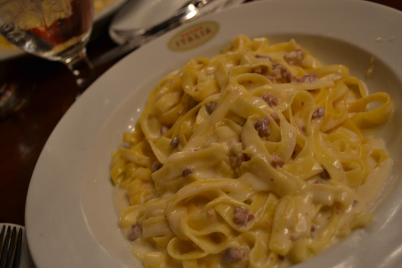
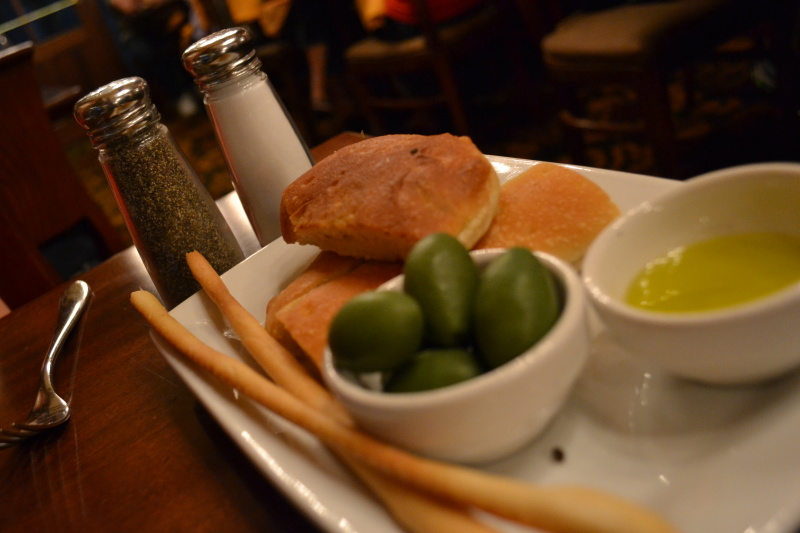

Tutto Italia: restaurante italiano no Epcot
Todo mundo adora um restaurante italiano, né? Ta aí um tipo de cozinha que não dá problema: agrada filhos e pais, avós…pessoas de todas as idades. Mas quando vamos para os Estados Unidos, vemos uma série de restaurantes italianos que não tem nada a ver com o que encontramos no Brasil e muito menos com os encontrados na Itália. Nada contra, quero deixar claro aqui que eu amo a comida “americana italiana” como a do Olive Garden, mas as vezes a gente quer um molho de tomate mais puro, sem tanto condimento e uma massa italiana MESMO.
Bom, na sua viagem em Orlando você poderá encontrar um restaurante italiano de verdade. O Tutto Itália é um dos restaurantes italianos encontrados no pavilhão da Itália, no Epcot. O restaurante é amplo, super agradável e com uma comida deliciosa.
Tutto Italia: o sabor da Itália no meio dos EUA
Tutto Italia no Epcot: Renata e uma entrada de burrata. Imperdível
Eu preciso me redimir aqui: quando o Tutto Itália abriu, eu fui comer lá e não achei nada demais. Passei anos achando que não valia perder uma refeição ali até que o Felipe me convenceu a dar mais uma chance e olha: deixo aqui meu obrigada ao meu marido por ter insistido tanto. A segunda chance valeu muito a pena! Eu não sei que mudança fizeram desde a abertura mas o restaurante está espetacular. Um dos meus favoritos nos dias de hoje.

Fettuccine Alfredo do Tutto Italia, em lembrança ao seu antecessor no Epcot. Com um toque a mais
Se é sua primeira vez na Disney e você quer conhecer um restaurante do Epcot, o Tutto Itália provavelmente seria a minha primeira sugestão para você, pois lá você com certeza não vai errar. Eu venho de família italiana e sou super chata com a massa de restaurantes. Se vão me falar que a massa é artesanal, é bom que me apresentem uma massa incrível, digna de ser chamada artesanal. E lá, a massa realmente não deixou nada a desejar, pelo contrário, veio no ponto certo, com sabor e textura perfeitos.
Enquanto espera o prato principal, não deixe de experimentar o couvert delicioso e se o apetite for grande, experimente também uma das entradas. Eles tem uma espécie de salada caprese quente que é fantástica. A mussarela de búfala vem morna, semi derretida, servida com tomate, azeite e manjericão. Só de falar estou com vontade de fazer uma reserva lá…
Toda essa comida maravilhosa é acompanhada de um serviço de primeira. Quando você junta a alegria dos funcionários da Disney com a receptividade dos italianos, a combinação é perfeita. Os garçons são super simpáticos, muitas vezes gostam de puxar papo quando vêem que você é do Brasil, e o tempo todo você os escuta cantando “parabéns pra você” em italiano em alguma mesa enfim…um clima super aconchegante.
Gostou? Ficou com vontade? Então corre lá no site da Disney, faz a sua reserva e depois volta para contar para gente o que você achou.


Couvert no Tutto Italia: delicioso e de graça fica melhor ainda
Nome: Tutto Italia Ristorante
Endereço: Italia Pavilion, Epcot, Walt Disney World Resort, Orlando, FL 32830 (Veja no Google Maps)
Telefone: +1 407-827-8428
Referência: Dentro do Epcot, no pavilhão da Itália
Preço: US$25-50 por pessoa (outubro/2013)
Horário de Funcionamento: depende do horário de funcionamento do Epcot
Cardápio:clique aqui para visualizar o cardápio (em inglês)
Disney Dining Plan: Sim
Avaliação do VPD: